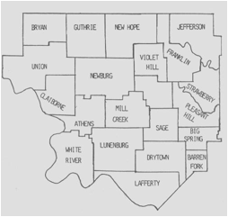

Key:
Numbers in brackets [ ] refer to
the bibliography at the end of this chart. An asterisk (*) shows continuation
of that line.
History and Research
The Lawrence County where the family settled is
still in Arkansas, not Missouri. Prior to 1819, Lawrence County, Arkansas
covered most of north Arkansas and a slice of what is now Missouri. Arkansas
was part of Missouri until 1819, when Arkansas became a separate
territory. Over 30 present Arkansas counties were cut from the original
Lawrence County. Batesville, when it was called Poke Bayou, was in
Lawrence County until Independence County was formed in 1820. Today,
Lawrence County, Arkansas is almost 50 miles from Batesville. Main towns
of this line are: Lawrence Co. MO; Locust Grove, Izard Co., Independence Co.
AR; Livingston Co., KY; Walker Co. TX; Greenbrier, NY. William and his wife
Nancy Chapman French (born 14 Feb 1785 in Newberry Co., SC) came to Lawrence
Co. when it was still part of Missouri in the early 1800's. William’s
birthplace is unknown. William and Nancy were part of a group of early settlers
in Arkansas Territory.
First Generation
1.1* William French, b. ca. 1780, lived in Independence Co.,
AR, m. Nancy Chapman in the late 1700s [1]. William is on the 1815 and 1816 tax
lists of Lawrence County Territory of Missouri, parent county of Independence
County, Arkansas. A first settler, deceased by 1819 since his name was
delinquent from the tax list that year. Nancy was b. 19 Feb 1786 in Newberry
Co., SC [9], d. 1855 in Izard Co., AR [2], perhaps the daughter of Joseph
Chapman who was on the 1821 tax list of Independence Co., AR, a first settler
[3], and the only Chapman in the area at that time. Ref [2] states Nancy’s
parents to be Giles Chapman and Mary Summers. Nancy was the first woman to
bring the French name into northern Arkansas [12]. William and Nancy were true frontier
pioneers. They arrived in the White River Valley before Arkansas was a
territory and long before it became a state [12]. On the 1830 Census of Izard
Co., AR, Nancy French is listed as a widow with 7 children. In 1920, there were
only about 40 families in this large area of N.E. Arkansas up and down the
white river. William may be the William French on the 1799 tax list of
Christian Co., KY since most of the first settlers in N.E. Arkansas came from
the S.W. corner of Kentucky [3]. Nancy is listed in the 1830, 1840, and 1850
(when she was 72) Census Records after William died [12].
The following paragraphs are from Ref [12].
William and Nancy (Chapman) French were the first to bring the French name into northern
Arkansas. They were true pioneers. They arrived in the White River Valley
before Arkansas was a territory and long before it became a state. If they came
by wagon, it’s certain that the family traveled from southeast Missouri to the
White River along a crude road, later improved and called the Southwest Trail.
Since there were few roads to the area they settled, they may have floated down
the Mississippi and made their way up the White River by flatboat.
Nancy Chapman was born 14 Feb 1785 in Newberry County, South
Carolina. Nancy’s father may have been Joseph or William Chapman, the only
Chapman men in the region prior to Arkansas statehood in 1836. She apparently
married William French before moving westward. Research indicates that Nancy
and William lived for a time in Kentucky, as one or more of their children were
born there in the very early 1800s.
William French was listed in the 1816 tax list for Lawrence
County. What is now Arkansas was part of Missouri Territory in 1816, and
Lawrence County covered most of northern Arkansas, plus the southern part of
present-day Missouri. Arkansas became a separate territory in 1819, and
Independence County was cut from Lawrence County in 1820. When established,
Independence County covered a huge area and 11 other counties would be cut from
its original boundaries during the 1800s.
It is most likely that the French family settled on or near
the White River, some distance upstream from Batesville, perhaps near the mouth
of Rocky
Bayou in present-day Izard County.
In 1824, William French was on the Independence County tax
list. He was the only man named French in the region between 1815 and 1824,
thus it may be assumed that he was Nancy French’s husband. Her son, Thomas
Jefferson French was born in 1819 in what is now Izard County, but was Lawrence
County at the time of his birth (Independence Co. was not created until 1820).
Nancy French appears as “head of the household” in the 1830
U.S. Census of Izard County, which was cut from Independence County in 1825.
She is listed with seven children (five sons, two daughters) living with her.
When the 1840 U.S. Census was taken, Nancy French was living
in White River Township (Izard County) with four sons and one daughter still
living at home. Three of the sons were between 20 and 30 years of age and one
was between 15 and 20 years old. The daughter was between 10 and 15 years of
age. The family farm was located near Rocky
Bayou, between Guion and Melbourne. An early pioneer road was extended up
this valley to a settlement east of present-day Melbourne. George French, one
of Nancy’s older sons, was living nearby with his wife and two children, both
under five years of age.
By 1850, Nancy French (now 72 years old) was living with her
son, Thomas J. French, Sr. He was listed in the U.S. Census at 31 years of age
and married to Adeline, age 16, who was born in Missouri. They had one child,
James Levi French, age three months. In addition, Jane French (age 23) was
living in the home. She was probably a sister-in-law to Thomas J. French, and
her husband was apparently dead. Jane’s son William R. French, age 5, was also in
the home. The census lists the neighbors as the W.F. Watkins family. The Thomas
J. French farm in 1850 was north of the present-day Violet Hill
community.
Second Generation
Children of William and Nancy (Chapman) French, 1.1
It is believed that Nancy and William French had seven
children. If so, only five possible candidates have been located. Most of this
data comes from Ref [12].
2.1* Frances French, b. 1802 in KY, d. Oct 1853 in Locust
Grove, Independence Co., AR, m. 1822 Independence Co., AR to James Bagley and
settled on a fine farm in Greenbrier township near the present community of
Locust Grove, Independence Co. before 1820 where they reared an extraordinarily
large family of 19, but only 16 have been located in records. James was b. 1787
in NJ, d. Fall 1856 in Locust Grove, Independence Co., AR. He came west from NY
and amassed a considerable estate, including slaves. He, and his brother, Asher
Bagley, of the first grand jury, were young men from NY state.
2.2* George H. French, b. 25 Dec 1811 in TN, m. Lynis
Finley, traveled with his brother Daniel to CA in 1869 and settled in Amador
Co., CA during the gold rush era [1]. Little is known about him, except that he
was married, with two children, at the time of the 1840 U.S. Census of Izard
County. In 1847, George French owned a section of land near the present Hwy. 9,
between Sylamore and the Twin Creeks turn-off. In the 1850 U.S. Census, George
H. French (age 38) was residing in Fulton County (Union Township) with his
wife, Lynis (age 35) and children: Townsend French (age 12), Lucinda (age 11),
Martin V. French (age 10), Mildred (age 5), Charles L. French (age 3) and U.F.
French (age 1). By 1855, George had land claims southeast of Oxford (Izard
County) on Sandy Creek [12]. On 26 Nov 1889 and 29 Apr 1892 George is listed on
the Federal
Land Records of Amador Co., CA [17]. Some of his sons are also listed.
2.3* Daniel Benjamin French, b. 1812-1818, traveled with his
brother George to CA in 1869 and settled in Amador Co., CA during the gold rush
era [1]. On 5 May 1875 he is listed on the Federal
Land Records of Amador Co., CA [17]. Daniel is listed on a farm near Thomas
J. French in the 1850 Census of Franklin Township, Izard County, AR. His wife
was Darcus French, age 19, and they had a daughter Sarah J. (age 2) and a son,
Kinman (age 1) [12].
2.4 Samuel French was married to Elizabeth Wilson in
Independence County on 10 Jan 1834 (Bk. A, pp 29) and he may have been a son of
William and Nancy. Samuel was probably born about 1814 and apparently settled
outside the region [12].
2.5* Thomas Jefferson French, Sr. was born in 1819 (just
before the death of his father) in Arkansas. Thomas married twice. Adeline, his
first wife, died sometime during the 1860s. Their children included James Levi
French (born in 1850), Thomas J. French, Jr. (born Dec. 1, 1854), and Elizabeth
French (born in 1857. It appears that one of Thomas’s brothers died young,
leaving a wife named Jane (born in 1822) and her son, William R. French (born
in 1845). Jane and William R. French were living with Thomas and Adeline by
1850.
About 1870,
Thomas J. French, Sr. married for a second time. Catherine, who was called
“Kate,” became his wife probably 1870. According to stories handed down through
the family, Kate had been married before and had two daughters. If true, they
apparently did not live with their mother, because they are not listed in the
French home on the census records. In the 1870 U.S. Census, Kate and Thomas
were living in the Rocky
Bayou Township, between the present town of Guion and the Lunenburg community. In
1870, Thomas was 54 years old and Kate was 26. In the home were Thomas, Jr.
(age 15); Elizabeth (age 13), and Jane (age 8). [Note: The town of Guion did not
exist until 1906, when the railroad was extended up the White River from
Batesville. Wild Haws Landing was just upstream from the present site of Guion,
and was a popular shipping point for farmers and merchants.] Thomas
J. French, Sr. died in the late 1870s, and Kate was a widow when the 1880
Census was taken. The county township was renamed Lunenburg (Izard County) and
only Kate and Thomas’s children by her remained at home. They included William
Watson “Watt” French (age 9), Rhoda (age 8), James (age 6), Lewis (age 5) and
Robert “Bob” French (age 2). Kate was born in Arkansas in 1844, according to
the census. Her parents, unknown by name, were both born in North Carolina.
Kate and Thomas J. French, Sr.’s children grew up in Izard County, but only
“Watt” French remained and established his permanent home at Guion, Arkansas
[12].

1900 Izard County Township Map
Guion was
created in 1906 from parts of Lafferty and Lunenburg. Lunenburg name changed
from Rocky Bayou between 1870-76. Part to Lafferty Creek in 1876. Part to Sage
between 1890-1900. Like all large towns, Lunenburg had several
stores, doctors’ offices, at least two cotton gins, a sawmill, a tannery,
several grist mills, blacksmith shops, a whiskey distillery, a cooper’s (barrel
maker’s) shop, a livery stable, churches and a school. One of the school
buildings, built in 1868 with the help of a well-attended International Order
of Odd Fellows lodge, had a bell that was the pride of the community.
Third
Generation
Children of Frances French and James Bagley, 2.1
3.1 Lourina Bagley, b. 1823, m. Adim Quinn on 29 Jun 1939.
3.2 John Bagley, b. 1826, m. Lucrelia Milsap on 4 May 1851.
3.3 Eliza Jane Bagley, b. 1827, who m. Allen Peel in 1847 in
Independence Co., AR. Their dau. was Ella Peel, b. 1870 in Independence Co.,
AR, m. Thomas Fleming. Their dau is Grace Fleming who m. James Baxter. Their
child is Grace Helen Baxter who m. ______ Constantine [5].
3.4 Harriet Ann Bagley, b. 1829, m. Horace Dunlap on 3 Feb
1845.
3.5 Elizabeth Bagley, b. 1830, m. David Luster on 25 Jan
1846.
3.6 James Asher Bagley, b. 1833.
3.7 George Clinton Bagley, b. 1834.
3.8 Virginia Bagley, b. 1838.
3.9 Daniel Chapman Bagley, b. 1844, moved to Oregon. Named
for his grandmother’s family [12].
3.10 Marcus C. or G. Bagley, b. 15 Jun 1844, m. Annie M.,
lived in the home of Wesley J. Clark on the 1860 census.
3.11 Lucretia Bagley, b. 1846.
3.12 Allen Ramsey Bagley, b. 30 Jun 1848 in Protem, Taney
Co., MO, m. Sarah Clark Wisdom on 2 Mar 1870 in Jackson Co., AR, moved to Texas
where he died 26 Oct 1926. They had 10 children to include Permelia Harriet
Bagley, b. 6 Oct 1874, who m. John James Gray on 15 Sep 1896, Taney Co., MO.
[4]. This family continues with son William Mack Gray, b. 20 Feb 1924 in Lynn
Co., TX and his dau. Annie Cleo Gray who m. _________ Melendez [4].
3.13 Edmond Bagley. Probably a child by Mary Hinkle, was an
heir to James in probate papers.
3.14 Grover Bagley.
Childen of George H., and Lynis (Finley) French, 2.2
3.15* Townsend Dickinson French, b. 14 Dec 1837 in Izard
Co., AR, m. Caroline Louise Anderson, moved to Oregon in late 1876 and was
murdered in Morrow Co., OR in 1880 leaving 10 children [1].
3.16 Lucinda A. French, b. ca. 1839.
3.17 Martin Vanburen French, b. ca. 1840. On 12 Nov 1890 Martin
is listed on the Federal
Land Records of Amador Co., CA [17]. Martin most likely m. Callie [17].
Martin may have had sons Frederick, Jefferson, and George W. French [17].
3.18 Mildred E. French, b. ca. 1845.
3.19 Charles L. French, b. ca. 1847.
3.20 Uz T. (or U.F.) (or Uzza Pomeroy) French, b. ca. 1849.
Children of Daniel B. and Darcus French, 2.3
3.21 Sarah J. French, b. 1848 in Franklin township, Izard
Co., AR [12].
3.22 Kinman French, b. 1849 in Franklin township, Izard Co.,
AR [12].
Children of Thomas J. Sr. and Adeline French, 2.5
3.23 James Levi French, b. 1850 [12].
3.24* Thomas Jefferson French, Jr., b. 1 Dec 1854 [12], m.
Luer Ann Mitchell, daughter of William and Mariah (Harvell) Mitchell, about
1875 in Izard County, AR, and they had 12 children [12]. Thomas became a
minister [12]. Thomas d. 1937 in Bower, OK [12].
3.25 Elizabeth French, b. 1857 [12].
Children of Thomas J. Sr. and Kate French, 2.5
About 1870, Thomas
J. French, Sr. married for a second time. Catherine, who was called “Kate,”
became his wife probably 1870. According to stories handed down through the
family, Kate had been married before and had two daughters. If true, they
apparently did not live with their mother, because they are not listed in the
French home on the census records. In the 1870 U.S. Census, Kate and Thomas
were living in the Rocky Bayou Township, between the present town of Guion and
the Lunenburg community. In 1870, Thomas was 54 years old and Kate was 26. In
the home were these children: Thomas, Jr. (age 15); Elizabeth (age 13), and
Jane (age 8) (born 1862, probably a sister-in-law to Thomas J. French, Sr., and
her husband was apparently dead. Jane had a son, William R. French). Kate
and Thomas J. French, Sr.’s children grew up in Izard County, but only “Watt”
French remained and established his permanent home at Guion, Arkansas [12].
3.26* William Watson “Watt” French, b. 1871 [14] or b. Aug
1869 [16], m. Laura Emily Sheffield. Their grandchild is Carold Hodges of
Houston, Texas [12] [14]. In 1900, he was a farm laborer [16].
3.27 Rhoda French, b. 1872 [12].
3.28 James French, b. 1874 [12].
3.29 Lewis O. French, b. 1875 [12].
3.30 Robert “Bob” French, b. 1878 [12].
Fourth
Generation
Children of Townsend D. and Caroline L. (Anderson) French,
3.15
4.1 Emma Mildred French, b. 28 Dec 1875 in Sacramento, CA,
m. Renne Julian Howard [1]. They had son Marion Randolph Howard, m. Hazel
Rebecca Laughlin [1]. And they had daughter Linda R. Howard [1].
Children of Thomas J. Jr. and Luer (Mitchell) French, 3.24
A large part of this family eventually settled in Oklahoma.
Thomas Jefferson French, Jr. became a minister. One of their sons, Grant
French, served in World War I and, upon his return to Izard County, he married
Nora Marshall in 1919. In late 1921, Grant and Nora, along with their parents
and several relatives from both sides of the family, moved to Bower, OK via
covered wagons. The trip took 18 days. Thomas J. French, Jr. died in 1937.
Nora had died in 1923. Both are buried in Bower, OK [12].
4.2 William French (born in 1879 and died in 1881) [12].
4.3 Anna Belle French (born 26 Nov. 1880; died 26 Jan.
1974); married William Joseph Boles; children: Stella Boles who married
Marshall Bryant and Nora Boles who married Allen Ham; Anna Belle French was
married a second time to Jack Shelton [12].
4.4 Ollie Lavoria French (born in 1884 and died in 1910;
married Bill Boles; children: Olsille Boles and Odie Boles [12].
4.5 Johnny Thomas French (born 9 Feb. 1886 and died 13 Dec.
1923); married Minnie Sexton; children: Zeffie French, Jeff French, Elmer
French, Zelmer French and Alma French. (Elmer was killed in an auto accident.)
[12]
4.6 Mollie Lucity French (born 6 July 1888 and died ?);
married Newton Caruthers; children: George L. (1906-1970); Noel, Edna (who
married Freeman King), Clifton Carruthers, Thelma (who married Franklin
Cochran), and Lizzie Carruthers (who married Gorland Standrich) [12].
4.7 Lizzie A. French (born 1890 and died in 1985); married
Will Carruthers in 1914; children all born at Oxford, Arkansas: Odell (who
married Rachel Nuton), Eva Mae (who married Grover McQuay), Randell Ray (who
married Vineta McQuay), and Willie (who married Ola Mae Baker) [12].
4.8 Myrtle Jane French (born 9 Feb. 1892 and died 10 June
1986); married Harrison Sexton; children: Captolia, Cleo Fay, Vergie May, Fred,
Grant H., Owen, Lola B., Clare Bow, Bobby Gene, and John Paul Sexton. Myrtle
married a second time, Frank Conklin [12].
4.9 Luer Grant French (born 15 April 1895 at Guion,
Arkansas; died 23 April 1995 in Bower, OK); married Nora V. Marshall in 1919 at
Bald Knob, Arkansas; children Jefferson D. French, Evert French, Mildred L.
(who married Dallas C. Grider), Beulah S. (who married Kerwin Andrew Williams),
Okley L. (who married Mary Ann Payne), Vernon Wayne French (who married twice:
Esther Ruth Burns and Lela Mae Oliver Miller), Bobby French, Herman Don French,
Dixie O. (who married Jimmie G. Dawson), Grant Harrison (who married Patsy L.
Starky), Bonnie Lorean (who married Donald G. Shaver), Ledessia Fern (who
married twice: Troy Beagle and Henry Effinger), Leland Dallas French (who
married Joyce Ann Francis), Mavis Carol (who married Jimmy R. Hairod) and
Arthur Allan French (who married Dorthry Mae Dawson) [12].
4.10 Tommie Otis French (born 1897 and died in 1981) married
Julie N. Blevins; children: Lloyd E., Trella Bell, Opal Fay, Loretta, and Jack
D. French. (This family settled in Alamogordo, New Mexico.) [12]
4.11 Dora Dell French {twin}, born in 1899 and died in 1921;
married Ebb H. Green; no children [12].
4.12 Cora Bell French {twin}, born in 1899 and died in 1911
[12].
4.13 Thelma L. French (born in 1902 and died ?); married
Hugh H. Erwin; children Sybil N. (who married John Davidson), Dan G. “Pete”,
Dean D. “Jack”, Theda M. and Nina L. Erwin [12].
Children of Thomas J. Jr. and Kate French, 3.24
Kate and Thomas J. French, Sr.’s children grew up in Izard
County, but only “Watt” French remained and established his permanent home at
Guion, Arkansas. In the 1880 census, their children included William Watson
“Watt” French (age 9), Rhoda (age 8), James (age 6), Lewis (age 5) and Robert
“Bob” French (age 2). Kate was born in Arkansas in 1844, according to the
census. Her parents, unknown by name, were both born in North Carolina. Kate
and Thomas J. French, Sr.’s children grew up in Izard County, but only “Watt”
French remained and established his permanent home at Guion, Arkansas [12].
4.14* William Watson “Watt” French, born 5 Aug 1871 and
married Laura Emily Sheffield, daughter of Benjamin Hill Sheffield and Emeline
Franklin. He was a member of the Christian Church. Daughters (and their
homes in 1946) included Virdie F. French Gulley of Ash Flat, Ark; Maxine
Lillian “Mamie” French Chitwood of Omaha, Ark.; and Beatrice Ola French Hodges
of Texas City, TX; sons included Ervin French of Tuckerman, Ark., and Oakley J.
French of Batesville, Ark. William
Watson French married again after Laura Emily died. Winnie Bell was born 28
June 1880 and died 23 Oct 1962. She is buried in Campbell Cemetery near Guion. Watt
died at Guion on 21 June 1947 at age 75. He is buried at Campbell Cemetery near
Guion.
4.15 Rhoda French was born in 1872 and married a Patterson.
They settled at Bald Knob, Arkansas.
4.16 James “Jim” French was born in 1874; no other data.
4.17* Lewis French was born in 1875 in Izard County and died
in 1898 in Woodruff County, Arkansas. Lewis is listed as Lewis O. French in
Woodruff County records, including his marriage license. (His name had been listed as William Lewis
French in family records and his son, Willie French, thought his father’s first
name was William.) Lewis French married Mary J. Kesterson in Woodruff
County, Arkansas. Mary Kesterson was born in Huntsville, Alabama in 1876.
According to her daughter, Mary had red hair. Mary had a sister, Docia
Kesterson, who also married a man named French. The mother of Mary and Docia
was named McPherson before marriage. Lewis French was buried in a cemetery west
of Fitzhugh, near the White River. Several years later, the river flooded and
the cemetery was washed away. Soon after Lewis French died, Mary J. married
George Brown and they moved away to Van Buren County. Mr. Brown was a merchant
in the Fairbanks Community. Mary and George Brown had the following children:
(1) Oscar was born 20 August 1901 and died 11 Sept. 1953; married Ethel M.
Matlock and their children were: Oneal, Pauline, Evelyn, Verlene, Bobby G. and
Paul Don Brown. Ethel was born 20 Jan. 1905 and died 29 Oct. 1973. She is
buried in California and Oscar is buried at Palestine Cemetery, west of Cave
City, Arkansas. (2) Grover W. Brown was born 9 Feb. 1904 and died 16 Oct. 1971;
married Georgia Waterman of Creston, Iowa. They had no children and lived most
of their lives in Kansas and Missouri, before retiring to Cave City. They are
both buried in Palestine Cemetery. (3) Delores Kathryn “Kay” Brown was born 17
Dec. 1906; married several times; no children. She was Kay Avery when she died
in Porterville, CA. (4) Clifton Brown was born about 1908 and died in boyhood.
Mary J. Brown, became a widow again in 1909, when George Brown died
unexpectedly at their home in Van Buren County. Mary, with five children,
quickly located another prospective husband. However, Mr. Hendricks did not
want five young children as part of the marriage, so “Willie” French, Oscar,
Grover, Kay and Clifton Brown were taken to the Oddfellows Orphans Home in
Batesville. This was about 1910 and the Brown children and their half-brother,
Willie French, remained there until they were placed in foster care. Mary died
in 1945 in Parson, Kansas. Her last husband was David J. Smith (1859-1945). She
was married five or six times.
4.18 Robert “Bob” French was born in 1878. He married and
had a daughter, Liza.
Children of Watt and Laura E. (Sheffield) French, 3.28
4.19 Verdie French, b. Mar 1893 [16].
4.20 Erwin French, b. Nov 1895 [16].
4.21 Robert L. French, b. Jan 1900 [16].
Fifth Generation
Children of William Watson “Watt” and Laura Emily (Sheffield)
French, 4.14
5.1 Virdie F. French of Ash Flat, AR, m. a man named Gulley
[12].
5.2 Maxine Lillian “Mamie” French of Omaha, AR, m. a man
named Chitwood [12].
5.3 Beatrice Ola French of Texas City, TX [12]. Beatrice Ola
French was born 6 Sep 1909 at Guion. She m. Harry Herman Hodges on 25
October 1925. They moved from Izard County in February 1942 and went to Egypt,
Texas. From there they moved to Glen Flor, Texas and then to Hitchcook, Texas.
Later they settled in Bacliff, Texas where their children grew up. Beatrice
died 23 June 1993 in League City, Galveston County, Texas. Their children are:
(1) James Edwin Hodges, b: 10 Oct 1926; m: Amelia Beatrice Paladino on 11 Oct
1951. (2) Billie Rudene
Hodges, b: 6 Aug 1928; m: S.A. Sapp on 10 Apr 1948. (3) Mary Etta Hodges, b: 21 Jan. 1932; m: Alvis James Arnett
on 17 Feb 1950. Mary’s children are: (1)
Carl Ray Hodges, b: 9 Jul 1933; m: 1>Frances Laverne Clark,
2>Marian E. Harper, 3>Jackie L. Sanders. (2) Gerald Ardell Hodges, b: 4 Jan 1935; m: Imogene Mullinghouse
on 6 Sep 1957. (3) Roy Tilmon Hodges, b: 6 Nov 1939; m: 1> Sandra Dixon,
2>Verna Delois King. (4) Carold
Lloyd Hodges, b: 6 Nov 1941 at Guion, Arkansas. (5) Harold Floyd Hodges, b: 6 Nov 1941; d: 29 Jan 2001; m:
Korliss Kay Wilson. (6) Harry
Herman Hodges, Jr., b: 27 Aug 1943; m: Sharon Kay Looney on 11 Feb 1963. (7) Dennis Lee Hodges, b: 13 Feb
1947; d: 10 Sep 2004; m: 1>Wanda A. Brown, 2>Patricia J. Kimbrough.
5.4 Ervin French of Tuckerman, AR.
5.5 Oakley J. French of Batesville, Ark. Oakley J. French was born 16
Sept. 1906 at Guion. (His name often appears in records as Okley.) He married
Edna Cora Barham of the Herpel community in Stone County on 5 Oct 1924 in Izard
County (Records 1919-25, p-576). She was born 22 Nov. 1908 – died: 3 April
1982). Their children included Virginia French Patterson (Batesville); Lillian
French Davis (Little Rock); Bonita French Berman (Sarasota, FL). Oakley worked
for the railroad (Missouri Pacific) and retired in west Batesville. He died 27
April 1995 and is buried beside his wife in Oaklawn Cemetery in Batesville. The
name on his tombstone is O.J. French. The original 24 acres of the cemetery
were purchased by the city on 15 Jun 1872. Batesville (see photo below)
is the oldest existing city in the State of Arkansas.
Children of Lewis and Mary J. (Kesterson) French, 4.17
5.6* William Lewis French was born 1 March 1898 at Tupelo
(Jackson County) and, according to family stories, was only a few days old when
his father died of spinal meningitis. He thought he was a Jr. for almost 80
years [12]. Records in Woodruff Co., AR prove that his father was actually
named Lewis O. French, and no one knows what the “O” stands for [12]. When
Willie French was about 16 or 17, he was sent to a farm near Cave City. In
exchange for hard labor, the farmer provided a foster home for Willie. On a
nearby farm, he met his future wife, Edna R. Matlock, daughter of John Henry
Matlock and Mollie (Young) Matlock. Edna was born 6 Sept. 1899, one of 11
children. The Matlock farm was about two miles from Willie’s foster home. On May 27,
1917, at age 19, Willie entered military service and completed basic training
in Louisiana, but World War I ended before he could be shipped
overseas. On 28 April 1918, William Lewis French married Edna Rdosha
Matlock at her parents’ home, west of Cave City. He died 29 Dec. 1982 and she
died 8 Feb. 1983. Both are buried in Palestine Cemetery, near their home, west
of Cave City. Willie was a minister for the Church of God, Matlock Rd., Cave
City, AR, for more than 50 years.
Sixth Generation
Children of Oakley J. and Edna C. (Barham) French, 5.5
6.1 Virginia French Patterson (Batesville)
6.2 Lillian French Davis (Little Rock)
6.3 Bonita French Berman (Sarasota, FL).
Children of William Lewis and Edna R. (Matlock) French, 5.6
6.4 Velma P. French, born 1 April 1919 and died 3 Dec. 2002;
married K. Garrett Ogilvie on 1 Dec. 1935 and had four children: Bobby G.
Ogilvie (1936-53); Benny Joe Ogilvie (1938 - ); John Craig Ogilvie (1944
- ) and Larry G. Ogilvie (1946-1946); Velma and Garrett were
divorced in 1958 and Velma then married Mack Steele on 6 Oct 1958. He died in
early 1983. Velma lived most of her life in the Cave City area.
6.5 Harvey Earl French, born 11 March 1922; died 20 Jan.
1990; married Dora Lee Horton on 9 Dec. 1940; She was born 8 Feb. 1921 and died
6 Sept. 1967; children: Bill C. French and Betty French Abbott. After Dora
Lee’s death, Harvey married Helen Farrell on 2 May 1970. Harvey lived in Arizona
most of his adult life and his family still resides there. However, Harvey and
Dora Lee are buried at Bald Knob, Arkansas.
6.6 Tommy Gene French, born 22 May 1925; married Irene
Finney on 4 Aug. 1942; children: Betty (1943-1943); Harvey Eugene French,
Glenna Ruth French Pruett, and Ronnie French. In 2006, Ronnie resides on the
“homeplace” where his grandparents (Willie and Edna French) lived.
Records
More siblings perhaps connected to Chart #25 are: Uzza
Pomeroy French, Benjamin Nunnley French, William Jefferson French, Uz Pomeroy
French, Frederick French, George W. French, and Jefferson French. Who is Hayden
French in Independence Co., AR in 1836 tax list? Who is Samuel French in 1833
tax list of Izard Co., AR? Is Samuel the son of William and Nancy? Jane French,
b. 1827, age given as 23 in the 1850 census of Izard Co., AR.
U.S. Census Reports
(note that ages do not always agree from one census to
another.)
1830 Izard County, White River Township
Nancy French (five males, three females)
1840 Izard County, White River Township (page 184)
Nancy French (one male, 15-20 years old; three males,
20-30 years old)
(one female, 10-15 years old; one female, 20-30 years
old; one female, 50-60 years old)
George French (one male under 5 years old; one male,
20-30 years old)
(one female under 5 years old; one female, 20-30 years old)
1850 Izard County, Franklin Township (page 32-B) Oct 23,
1850
480/480 French, Thomas J., age 31, born in Arkansas
Adeline, age 16, born in Missouri
Nancy, age 72, born in South Carolina
Jane, age 23, born in Arkansas
William R., age 5, born in Arkansas
James Levi, age 3-months, born in Arkansas
(neighbors: Pittman and Watkins)
455/ French, Daniel B., age 28, born in Arkansas
Darcus, age 19, born in Arkansas
Sarah J., age 2, born in Arkansas
Kinman, age one-month, born in Arkansas
1860 Izard County, Irons Point Township (south of the White
River in area that became Stone County in 1873)
#1109 French, Thomas J., age 40, born in Arkansas
Angeline (Adeline), age 27, born in Missouri
Nancy J., age 10, born in Arkansas
Mary, age 6, born in Arkansas
Thomas (Jr.), age 3/? (5), born in Arkansas
Sarah E. (Elizabeth), age 2, born in Arkansas
1870 Izard County, Rocky Bayou Township (page 18) Aug 2, 1870
136/137 French, Thomas J., age 54, born in Arkansas
Catherine, age 23, born in Arkansas
Thomas (Jr), age 15, born in Arkansas
(Sarah) Elizabeth, age 13, born in Arkansas
Jane, age 8, born in Arkansas
1880 Izard County, Lunenburg Township, page 412-C, June 30, 1880
63/65 French, Kate, age 36, widow, born in Arkansas;
parents born in North Carolina
William “Watt”, age 9, born in Arkansas; parents born in Arkansas
Rhoda, age 8, born in Arkansas
James, age 6, born in Arkansas
Lewis, age 5, born in Arkansas
Robert, age 2, born in Arkansas
1880 Izard County, New Hope Township
#290 French, Thomas , age 21, born in Arkansas; both
parents born in Arkansas.
Luran (Luer Ann) wife, age 19, born in Ark., father born in Ark., mother born in
Tenn.
William, age 1, born in Arkansas
---- also in home ---
Mariah Mitchell, age 49, born in Tenn; both parents born in Tenn.
(mother-in-law)
John Mitchell, age 9, born in Arkanas (brother-in-law)
1900 Izard County, Lunenburg Township (June 1900)
#67 French, W. Watt, age 30, born Aug 1869, born
in Arkansas; parents born in Arkansas
Laura, wife, age 26, born Sept 1873, born in Arkansas; parents born in Arkansas
Verdie, age 7, born Mar 1893
Erwin, age 4, born Nov 1895
Robert L., age four months, born Jan 1900
# 79 French, Thomas J., age 42, married 21 years
Lou J (Luer Ann)
Children: Ollie, John, Mollie, Lizzie, Murtel, Louis, John, Dora, Cora
1920 Izard County, New Hope Township
#8 French, Thomas, age 62, born in Arkansas;
father born in Ark.; mother born in Tenn.
Lura J. (wife), age 58, born in Tenn; parents born in Tenn.
Grant, age 23
Thelma, age 17
Nora, age 15 (daughter-in-law)
1920 Izard County, Guion Township
#40 French, Ivan (stave mill worker), age 24
Ida (wife) age 19
#114 French, W.W. (farmer), age 47, born in
Arkansas
Verdie, age 26
Oakley, age 12
Beatrice, age 10
Bibliography
[1] Linda Howard, mailto:lhoward@standard.com
(old).
(old email) (503) 321-6362
(disconnected). 3414 S.E., Lincoln, Portland, OR 97214.
[2] Janice Looney, P.O. Box 231, Walnut Grove, MO
65770 (no longer at this address).
[3] Charles Hutchinson, who is working on this line:
750 Bodega Ave., Petaluma, CA 94952 707-763-2153. He’s not well. All data from
his folder is in this chart.
[4] Annie C.
Melendez, 5114 Walnut Park Dr., Santa Barbara, CA 93111. 805-967-7654. FFA Member #443. Family names: BAGLEY, CHAPMAN, JAMES,
LUSTER, GRAY. Connection: William French, Chart #25. William (1), b. ca. 1780
Lawrence Co. MO, m. Nancy Chapman; Frances French (2), b. 1802 in KY, m. James Bagley
in 1822 in Independence Co., AR and had 19 children; Allen Ramsey Bagley (3) of
Protem, MO, m. Sarah Clark Wisdom of Walker Co. TX; Permelia H. Bagley (4), m.
John J. Gray; William Mack Gray (5); Annie C. Melendez (6). Query: Desire
information about the names of the parents of Frances French. James was b.
1787, parents of 19 children. Lived in or near Locust Grove, Independence Co.,
AR. Also desire info of Publius Bagley, b. 13 March 1873, left Protem, MO area
about 1889, thought to have gone to Florida, area unknown. I have an article
saying James Bagley and his brother Asher were from NY state as early as 1821
and lived there until 1853 in Greenbrier township.
[5] Grace Baxter Constantine, mailto:gconstan@worldpath.net (old
email since 2001) 166 Whippoorwill Road, Union, NH 03887. (603) 473-2289
(disconnected). I have not positively proven that my connection to the FRENCH
line, a GG Grandmother Frances French Bagley, is the daughter of William and
Nancy Chapman French. Frances is listed in the 1850 census for Independence
Co., AR as being born 1800(04?) in Kentucky, she was wife of James Bagley, b.
1787 in New Jersey. One of their daughters, Eliza Jane Bagley Peel, married
Alan Peel and were my G Grandparents. One descendent of William had seen his
birthplace given as Virginia. I had wondered whether he was part of the French
line who moved to Kentucky from Spartanburg Co., SC. In 1850 census for Izard
Co., Nancy, apparently a widow, is living with a son or grandson and gives her
birthdate as 1782 and birthplace as South Carolina.
[6] 1850 Independence County, AR: ftp://ftp.rootsweb.com/pub/census/ar/independence/1850/
FRENCH:
Alpheus, 50, farmer in VA (there is one from Farquier Co., VA who m. Juliet
Byrne on 23 Jan 1832).
Julia A., 39, of VA (probably the wife of Alpheus, above, and probably named
Juliet Byrne)
Mary J. C., 17, of VA (the rest are probably their children)
Uriah, 15, farmer, of VA
Elizabeth U., 12, of MO
James D., 10, of MO
Margaret A., 8, of MO
(probably Margaret Abigail French 1842-1916, who m.
Jesse W. Flinn. He was a doctor. After he m. Margaret, they lived in Guilford
Co. until about 1831, when they moved to Madison Co., Ky., and then in 1839
they moved to McMinn Co., Tenn., where Margaret Died in 1844. He must have been
m. to Nancy Smith for a short time, for he moved to Independence Co., Ark. in
1857 where he m. Margaret Abigail French. He spent the rest of his life as a
farmer and stock raiser, also practicing medicine to some extent. He had
attended Baltimore College of Medicine, now The University of Maryland Medical
School. He is buried in Alderbrook Cemetery; Desha, Ark.
Alpheus, 6, of AR
William E., 4, of AR
Martha, 3, of AR
John, 2 mo., of AR
[7] The Independence Co. Chronicle, Vol. IV, April
1963, No. 3, published quarterly the Independence County Historical Society,
Batesville, Arkansas.
[8] Linda Kay Richards, email: lindajud@pacbell.net (old email)
[9] Nora Crauthers. email: NCrauthers@aol.com (old email) or noracrauthers1@aol.com
(old email). I am looking for information on my husband's French family line.
His G-Grandfather was Thomas Jefferson French, born Dec 1857 in Arkansas. Lived
in Izard County, Ark but don't know if this is county he was born in. His
father was born in Ark and his mother in Tennessee but we don't know their
names. His wife was Lou Mitchell. Either Thomas' wife or his mother was a full
blood Indian but we are unsure about which one.
[10] Harry
F. Anderson, andersonhf@cox.net. I do not have any information on your William French, but he
appears to have lived in the same area where a James A. French later settled in
1871. Do you know the maiden name of Isabella who married this James A. French
about 1861. James A. was the son of Elijah French who lived in Marshall Co., AL
in 1850. James A. was born 1835 in AL and Elijah about 1808 in SC. Isabella
lived with her sister, Margaret (dc 1865) wife of Albert G. Anderson of
Tuscumbia, AL, during the Civil War. There are family traditions that give
Margaret’s maiden name as both Crump and Kyle. She may have been from Decatur,
AL. Isabella and James A. French left Colbert Co., AL in or about 1871 and
moved to Izard Co., AR. They both died after 1900.
[11]
Rose Ombre, roseombre@aol.com, website: http://www.geocities.com/Heartland/Pointe/1080/french.html
[12] Craig (and Sue) Ogilvie, 1850 Case St.,
Batesville, AR 72501, 870-793-6489, craigogilvie@sbcglobal.net
U.S. Census data, researched by Craig Ogilvie and
Roger Harvell
Obituary of Watt French, Batesville Guard
Obituary of Edna Barham (Mrs. Oakley
French), Batesville Guard
Official Discharge of William L. French
from U.S. Army
Tombstones of Oakley J. and Edna B.
French, Oaklawn Cemetery in Batesville, Arkansas
Thomas J. French family history by Norine
Weeks, descendant
Letters from Charles W. Hutchinson of
Petaluma, CA., descendant of Frances French
Recorded family data from Velma French
(Ogilvie) Steele and others
[13] Joyce Cooper Walker, jskywalker@cox-internet.com
[14] Carold Hodges, segdohci@yahoo.com (old)
[15]
SueAnn Davis, COLEKTR1@cs.com (old)
[16] Descendants
of Benjamin Hill.
[17] Amador
Co., CA, Index to Federal Lan Records Names “A” - “G”, California Land Patents Database.